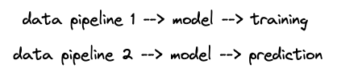
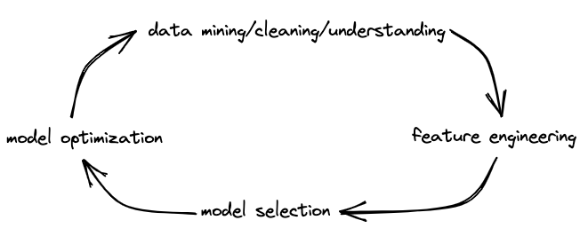
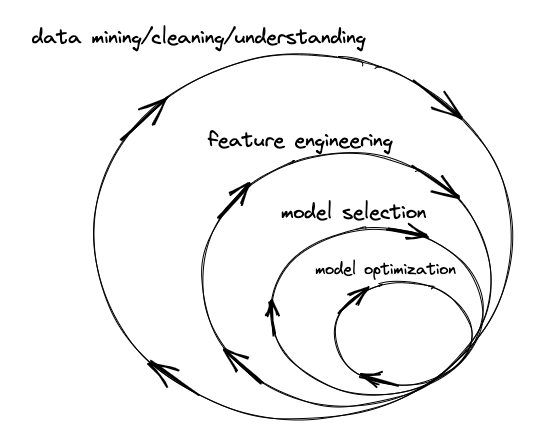
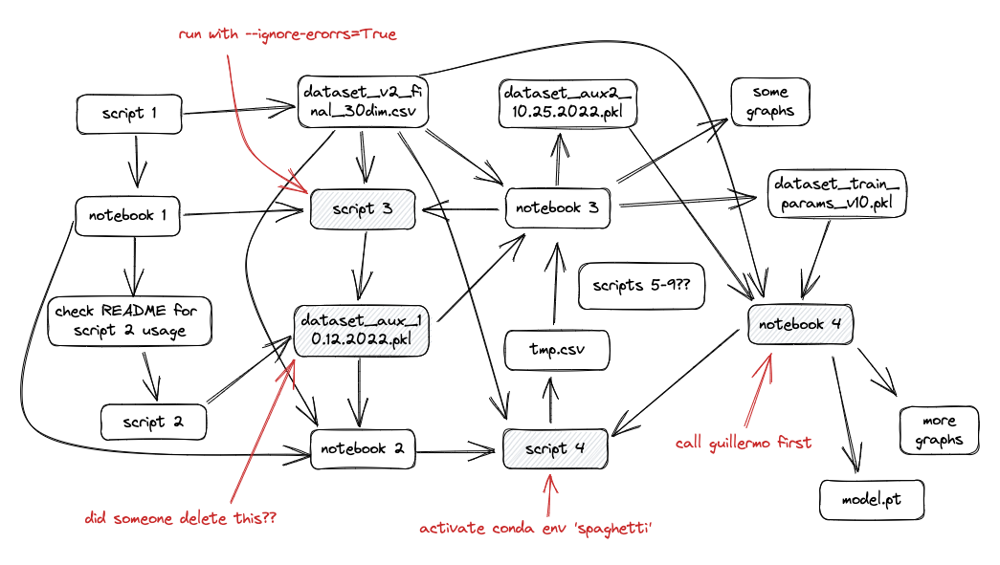
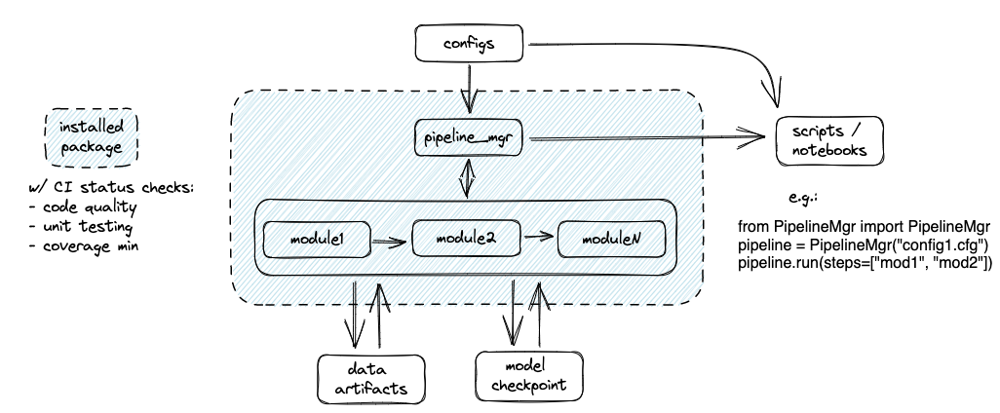

The challenge
It’s 2023. There’s now so many blogs, tutorials, courses, and even degrees that cover how to be an effective data scientist, follow best practices, and build effective data science pipelines. This post will cover my own opinionated take on the pipelines part. Specifically, what’s a good template to follow for building the codebase around a new data science / ML project?
I will define what I mean by “good” further below. But for now, suffice it to say that we want this template to generalize reasonably well to a variety of scenarios that typically involve exploratory data analysis, data processing, and (hopefully) building/validating an ML model.
First off, let’s understand how data scientists and ML engineers would actually LIKE their finished pipelines to run, in an ideal world:

However, there’s a dissonance here. Every data scientist knows that the development process that gets you here is highly nonlinear, even circular at times. This is why the data science process is often shown as looking something like this:

And the reality is that things are even much more complicated and upredictable. Not only is the workflow non-linear, it’s also multidirectional, which leads to something that looks more like this:

I have to credit one of my previous managers, Adam Cornille, for introducing me to a similar visual years ago. There’s two additional points here that have really influenced my thinking: 1) insights from one stage can revise any previous stage in parallel, and 2) the initial stages of the ds lifecycle typically yield the most reward, in the end, for the effort you put in.
But the main point is, things can get complicated quickly. Which often leads to spaghetti code that looks something like this:

(Many thanks again to Guillermo)
- Need to change a script?
- Need to test changes to the input data?
- Need to transfer ownership of your project?
- Need to reproduce a result?
Good luck…
So, how do we deal with this? Specifically, how do we enable a highly nonlinear, multidirectional workflow that doesn’t lead to brittle, costly code that’s impossible to alter or let anyone else use?
Let’s return to our definition of “good”. I like to break this down into a few philosophical categories:
- Modularity
- A modular codebase is organized into smaller components that can be easily reused and combined. This makes it easier to maintain and extend the codebase, ultimately saving time and effort.
- Readability
- Readable code is crucial for collaboration and debugging. Clear, well-written code helps ensure that others can quickly grasp its functionality, reducing errors and misunderstandings.
- Repeatability
- In data science, it’s essential to be able to reproduce results. A repeatable workflow ensures that your analyses and models can be easily reproduced by yourself and others.
- Robustness
- Robust code is designed to handle unexpected inputs and situations gracefully. Most real-world data science projects involve questionable data quality and consistency, making it likely that new edge cases will break your pipelines or violate their assumptions.
A simple proposal
To that end, I’ve put together a template repository that takes my own opinions on how to address these challenges and puts them into practice.
That’s summarized with this visual:

You can read the repo’s README to see how each of the 4 philosophical elements are addressed. But the key ideas here are:
- Modular, installable codebase.
- Separation of code from dependencies and other settings
- Pipeline management and low-code notebooks to test workflows
- Testing locally and through CI.
Right after I started this post I also found out about cookiecutter, which also provides a generic template for data science repos. I’ve had a couple mentees use it and I can vouch for it. It uses essentially the same principles. I don’t think it uses any of the testing hooks / CI, but it does have the benefit of already being widely used and more fully fleshed out features.
Then there’s also kedro, which is built on top of cookiecutter, and even incorporates some aspects of workflow management (see the end of this post).
A question I often ask prospective candidates for DS/MLE positions something like, “Let’s say you’ve worked on a data science project for some time and now need to transfer ownership of the project to someone new. What are some best practices you would use in your project repo, to ensure they are successful?”
There are, of course, many facets to this question, and there’s plenty of room for debate on the implementation details that this template does not address (e.g. documentation, code quality, data/model versioning). But, I’m generally looking for answers that can address one of these four philosophical elements in some way. And the more someone can demonstrate their understanding of how to put these philosophies into practice, the better. With that said, I’ve already confessed to being opinionated about this, and I welcome feedback about those opinions. At the same time, I hope others who are still searching for more structure might learn from some of my own experience.
But wait
What about workflow management systems (e.g. prefect, metaflow, airflow, etc.)? A quick word on this…
What I have noticed from some of the more junior folks is that pipelines can be brittle not only due to lack of familiarity with the right tools, but lack of understanding of the principles I’ve just discussed. So, a WMS is certainly helpful in many regards, but is neither necessary nor sufficient to build a pipeline that meets any of these criteria satisfactorily.
This is a difference in focus. A template repository is centered around code organization and best practices, and designed as a general-purpose solution that can be adapted to various DS and ML projects. Workflow management systems are focused on orchestrating and managing the execution of different tasks or steps in a pipeline. One is for writing code, the other is for running code. Ideally a coherent repo structure and a WMS would be used together to make it easy to do both.